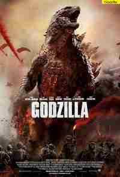
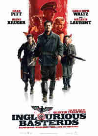
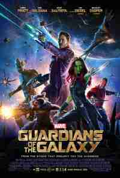

Fresh Tomatoes!

Planes Trains and Automobiles
Easily excitable Neal Page (Steve Martin) is somewhat of a control
freak. Trying to get home to Chicago to spend Thanksgiving
with his wife (Laila Robbins) and kids, his flight is
rerouted to a distant city in Kansas because of a freak
snowstorm, and his sanity begins to fray. Worse yet, he is
forced to bunk up with talkative Del Griffith (John Candy),
whom he finds extremely annoying. Together they must
overcome the insanity of holiday travel to reach their
intended destination.
Amy
Despite just two albums to her name Amy Winehouse is one of
the biggest music icons in British history. With a voice oft
described as a combination of Billy Holiday, Dinah Washington
and Sarah Vaughan, Amy Winehouse was a pop star with soul; a
once in two generational musical talent whose appeal crossed
cultural and demographic boundaries. But while her music made
her a star, her chaotic personal life stole headlines.

Godzilla
Ford Brody (Aaron Taylor-Johnson), a Navy bomb expert, has just
reunited with his family in San Francisco when he is forced to go to
Japan to help his estranged father, Joe (Bryan Cranston). Soon, both
men are swept up in an escalating crisis when Godzilla, King of the
Monsters, arises from the sea to combat malevolent adversaries that
threaten the survival of humanity. The creatures leave colossal
destruction in their wake, as they make their way toward their final
battleground: San Francisco.

Talladega Nights
NASCAR superstar Ricky Bobby (Will Ferrell) is at the top of his game;
adored by fans, a trophy wife by his side, and incredible wealth. But
Ricky loses it all when French Formula One champion Jean Girard (Sacha
Baron Cohen) roars onto the scene. Ricky, with the help of his
ruthless father, must pull himself out of the depths of despair and
restore his honor on the racetrack.

Inglourious Basterds
It is the first year of Germany's occupation of France. Allied officer
Lt. Aldo Raine (Brad Pitt) assembles a team of Jewish soldiers to
commit violent acts of retribution against the Nazis, including the
taking of their scalps. He and his men join forces with Bridget von
Hammersmark, a German actress and undercover agent, to bring down the
leaders of the Third Reich. Their fates converge with theater owner
Shosanna Dreyfus, who seeks to avenge the Nazis' execution of her
family.

Whiplash
Andrew Neiman (Miles Teller) is an ambitious young jazz drummer, in
pursuit of rising to the top of his elite music conservatory. Terence
Fletcher (J.K. Simmons), an instructor known for his terrifying
teaching methods, discovers Andrew and transfers the aspiring drummer
into the top jazz ensemble, forever changing the young man's life. But
Andrew's passion to achieve perfection quickly spirals into obsession,
as his ruthless teacher pushes him to the brink of his ability and his
sanity.
Mission Impossible Rogue Nation
With the IMF now disbanded and Ethan Hunt (Tom Cruise) out in the
cold, a new threat -- called the Syndicate -- soon emerges. The
Syndicate is a network of highly skilled operatives who are dedicated
to establishing a new world order via an escalating series of
terrorist attacks. Faced with what may be the most impossible mission
yet, Ethan gathers his team and joins forces with Ilsa Faust (Rebecca
Ferguson), a disavowed British agent who may or may not be a member of
this deadly rogue nation.
San Andreas
A seemingly ideal day turns disastrous when California's notorious San
Andreas fault triggers a devastating, magnitude 9 earthquake, the
largest in recorded history. As the Earth cracks open and buildings
start to crumble, Ray Gaines (Dwayne Johnson), an LAFD
search-and-rescue helicopter pilot, must navigate the destruction from
Los Angeles to San Francisco to bring his estranged wife (Carla
Gugino) and their only daughter (Alexandra Daddario) to safety.
The Grand Budapest Hotel
In the 1930s, the Grand Budapest Hotel is a popular European ski
resort, presided over by concierge Gustave H. (Ralph Fiennes). Zero,
a junior lobby boy, becomes Gustave's friend and protege. Gustave
prides himself on providing first-class service to the hotel's guests,
including satisfying the sexual needs of the many elderly women who
stay there. When one of Gustave's lovers dies mysteriously, Gustave
finds himself the recipient of a priceless painting and the chief
suspect in her murder.

Guardians of the Galaxy
Brash space adventurer Peter Quill (Chris Pratt) finds himself the
quarry of relentless bounty hunters after he steals an orb coveted
by Ronan, a powerful villain. To evade Ronan, Quill is forced into
an uneasy truce with four disparate misfits: gun-toting Rocket
Raccoon, treelike-humanoid Groot, enigmatic Gamora, and
vengeance-driven Drax the Destroyer. But when he discovers the
orb's true power and the cosmic threat it poses, Quill must rally
his ragtag group to save the universe.